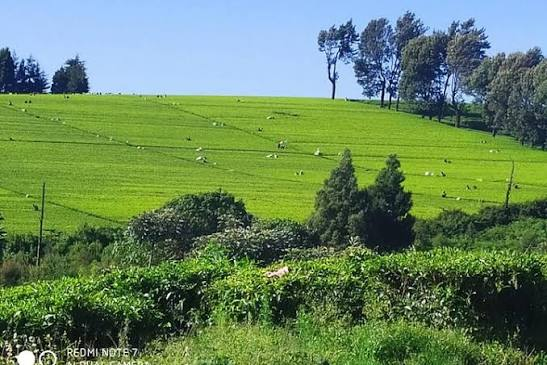

Welcome To Green Hills Plantation
Green hills coffee plantation is a coffee farm dedicated to growing quality coffee. we welcome visitors, tourist and potential coffee buyers to learn about our farm and coffee production.
Our coffee farm

learn about coffee
learn about us
green hills coffee plantation is dedicated to growing high quality coffee in kenya. we aim to providing quality coffee and promote coffee farming
discover more about our coffee,farming practices and commitment to quality
contact us
contact the plantation
coffee varieties we grow
- Arabica
- Robusta
- Batian
- Ruiru 11
COFFEE PLANTATION STAGES
- Planting
- Growing
- Harvesting
- Processing and drying
- Packaging
coffee plantation activity
- prunning
- trimming coffee branches to encourage healthy growth
- harvesting
- picking ripe coffee cherries from coffee plants.
- drying
- removing moisture from harvested coffee beans.